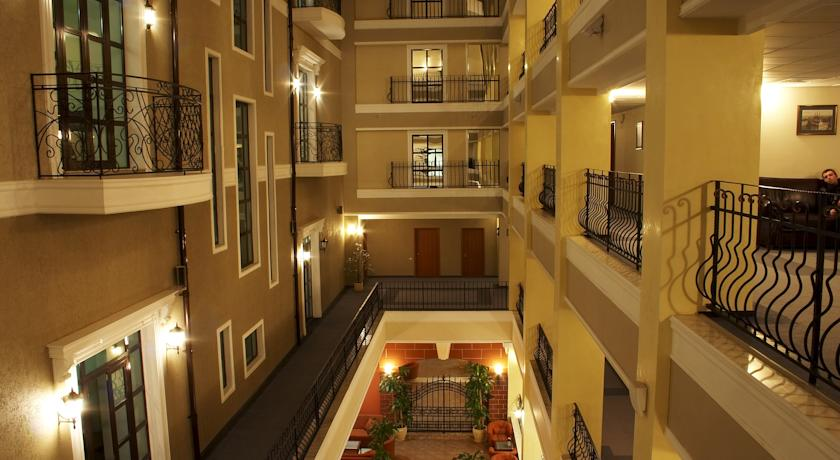
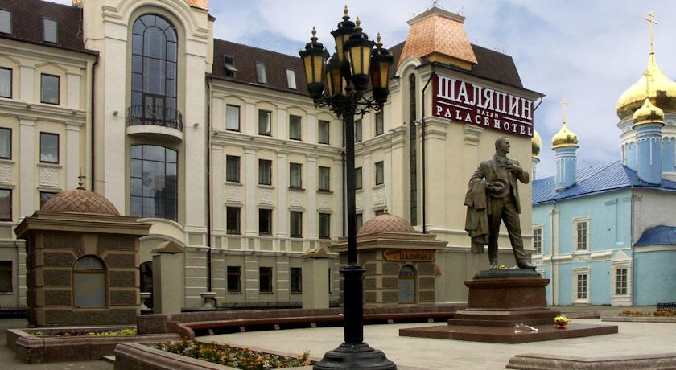
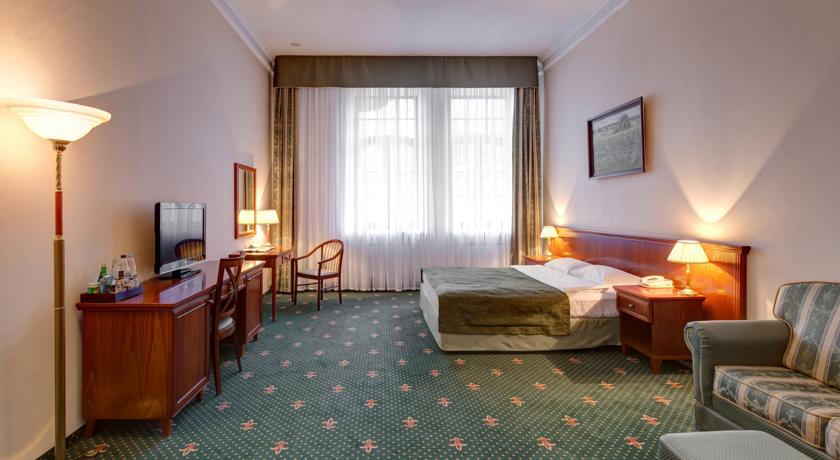
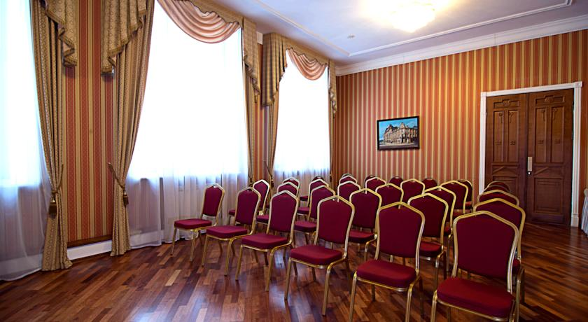
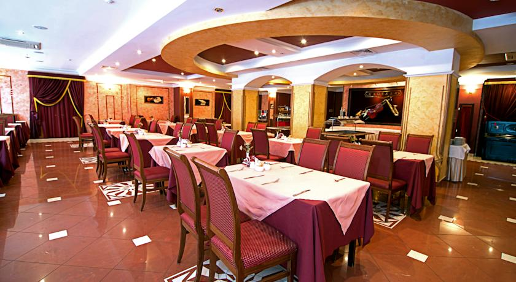

Шаляпин Палас Отель






Отель категории 4 звезды «Шаляпин Палас» находится в центре Казани, рядом с пешеходной зоной на улице Баумана.
К услугам гостей отеля 123 классически оформленных, чистых и комфортабельных номера.
По утрам в собственном ресторане отеля накрывается обильный завтрак «шведский стол». В ресторане «Капелла» можно попробовать вкусные блюда татарской и русской кухонь, а также разнообразные блюда европейской кухни. Бар с живой фортепианной музыкой Piano Bar отеля «Шаляпин» работает круглосуточно.
Все гости отеля «Шаляпин Палас» могут бесплатно посещать фитнес-центр с крытым бассейном, тренажерным залом и сауной. В число прочих удобств входят помещения для совещаний различного уровня.
Поблизости можно посетить главные городские достопримечательности, в том числе Казанский кремль, Богоявленский собор и Казанский государственный университет.
Это любимая часть города Казань среди наших гостей согласно независимым отзывам.
Мы говорим на вашем языке!
Шаляпин Палас Отель — принимает гостей с 28 авг. 2009
Номеров в отеле: 123